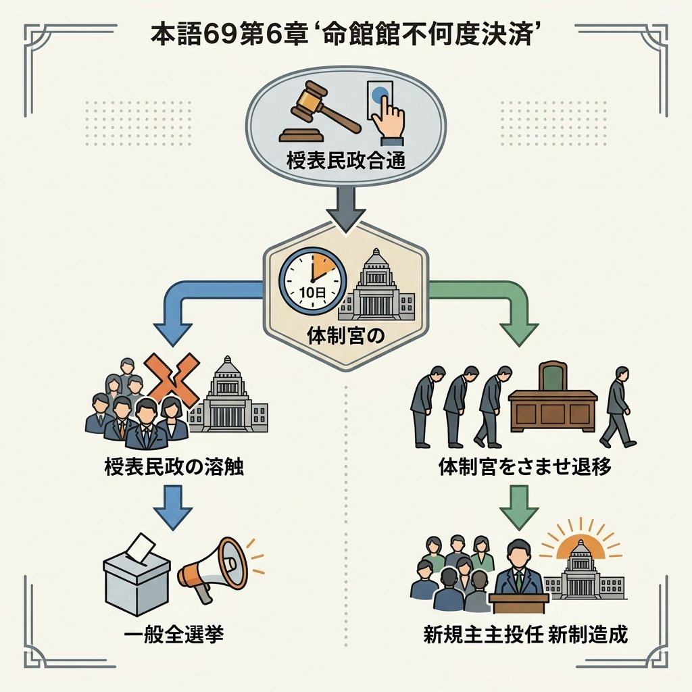

6. 内閣 ─国の行政機関─
国会が作った法律や予算に基づいて、実際に国の様々な仕事を行うことを「行政」と呼び、その中心となる機関が「内閣」です。日本の内閣は国会と非常に強い信頼関係で結ばれており、独自の意思決定システムを持っています。今回は、内閣の仕組み、国会との関係である「議院内閣制」、そして内閣の重要な権限について詳しく整理します！
1. 内閣の構成と「行政（ぎょうせい）」
行政とは、国会が作った法律や予算を実行に移し、実際に国民の生活を支える国の仕事（教育、福祉、警察、外交など）を行うことです。
① 内閣のリーダーとメンバー
行政の最高責任機関である内閣は、リーダーである内閣総理大臣（首相）と、その他の国務大臣（こくむだいじん）によって構成されています。
- 内閣総理大臣の誕生：国会議員の中から国会が指名し、天皇が任命します。
- 国務大臣の任命：内閣総理大臣が指名・任命します。その過半数は国会議員でなければなりません。
- 文民（ぶんみん）の条件：総理大臣およびすべての国務大臣は、軍人ではない「文民」でなければなりません（戦前の軍部暴走の反省によるものです）。
② 閣議（かくぎ）と行政組織
内閣総理大臣が主宰し、国務大臣全員が集まって内閣の方針を決める会議を閣議と呼びます。閣議での決定は、全員の意見が一致する全会一致（ぜんかいいっち）が原則です。
閣議で決まった方針をもとに、内閣の下にある「内閣府」や「外務省」「文部科学省」「厚生労働省」などの各府省が、実際の行政事務を分担して行います。
2. 国会と内閣の関係：議院内閣制（ぎいんないかくせい）
日本の内閣は、国会と切り離されているのではなく、深く結びついています。この「内閣が国会の信任に基づいてつくられ、国会に対して連帯して責任を負う」仕組みを議院内閣制と呼びます。
◆ 衆議院の「内閣不信任決議」と内閣の対応（憲法第69条・超頻出！）
衆議院が「今の内閣は信用できない」として内閣不信任決議案を可決（または信任決議案を否決）した場合、内閣は10日以内に次のどちらかの道を選ばなければなりません。
① 衆議院を解散する：
衆議院議員を全員クビにして総選挙を行い、国民にどちらが正しいか信を問う。選挙後、特別国会を開いて内閣は総辞職します。
② 内閣総辞職（そうじしょく）をする：
総理大臣と国務大臣が全員まとめて辞職する。

図1：内閣不信任に対する衆議院の解散、または内閣総辞職の仕組み
3. 内閣の主な仕事と現代の行政課題
① 内閣の重要権限
- 予算（案）の作成：国会に提出するため、国の収入と使い道の計画案を作成します（※議決するのは国会）。
- 条約の締結（ていけつ）：外国との条約を結びます（※事前または事後に国会の承認が必要）。
- 政令（せいれい）の制定：法律を実行するために、内閣が独自に出す命令。
- 天皇の国事行為に対する「助言と承認」：内閣が責任を持ちます。
- 裁判官の指名と任命：最高裁判所長官を指名し（天皇が任命）、その他の裁判官を任命します。
② 現代の行政課題（官僚制の肥大化）
現代社会が複雑になるにつれ、専門的な知識を持つ公務員（官僚）が政策の実質的な決定権を持つようになり、行政の権限が大きくなりすぎる行政権の拡大（官僚政治）が課題となっています。
このため、行政の無駄を省くための「規制緩和（民間企業の自由な活動の促進）」や、公務員制度の改革、行政情報の公開を進める取り組みが重要視されています。
🔥 この単元のテスト対策・暗記のコツ
-
★
「議院内閣制」の言葉の定義（記述！）：
・記述：「議院内閣制とはどのような仕組みか、『国会』と『内閣』の語句を用いて説明しなさい。」
・解答：「内閣が国会の信任に基づいて作られ、国会に対して連帯して責任を負う仕組み。」 -
★
憲法第69条の数字と選択肢の暗記（超頻出）：
・内閣不信任が可決された際、「10日以内」に「衆議院の解散」か「内閣総辞職」を行う。この数字（10）と２つの選択肢は絶対に覚えてください。 -
★
国会と内閣の権限のひっかけ（ひっかけ多発！）：
・予算 ＝ 「作成」するのは内閣、「議決（決める）」のは国会。
・条約 ＝ 「締結（結ぶ）」のは内閣、「承認（認める）」するのは国会。
※記述や選択問題で主体が逆になっていないか注意してください！